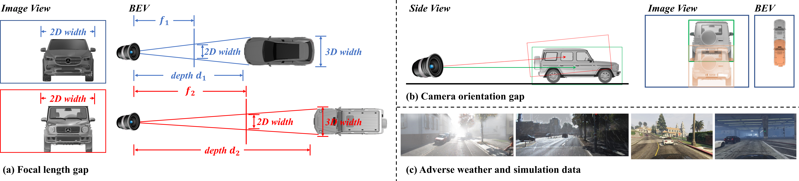
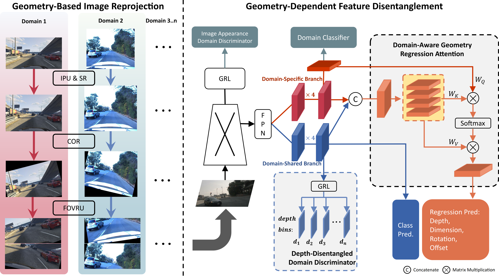
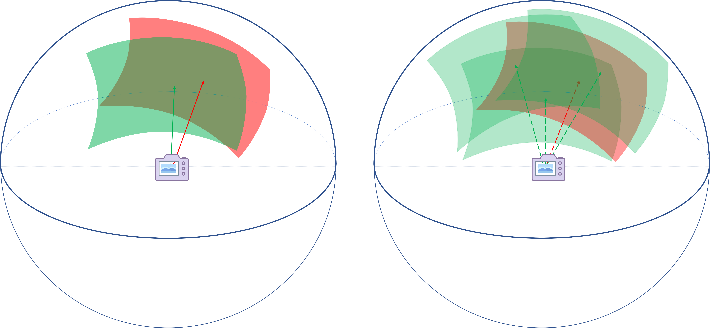
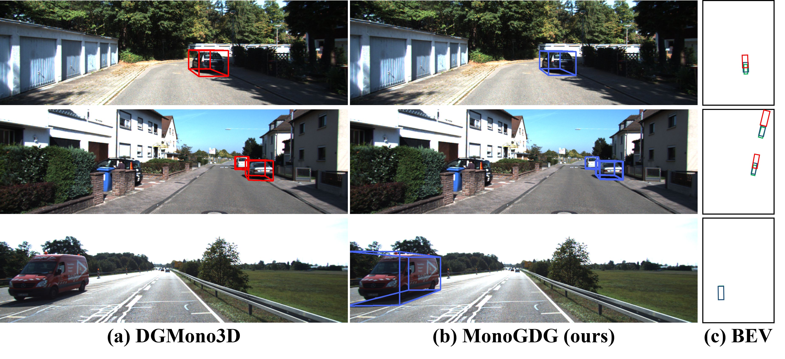

The domain gaps in monocular 3D object detection are very complex, including focal length gap, camera orientation gap, image appearance gap, etc. (a) Two vehicles of the same 2D and 3D size are taken at different focal lengths, and their depths vary dramatically. (b) A higher pitch angle of the camera causes objects to appear lower in the image, leading to the trained model predicting closer depths for the objects. (c) Variations in image appearance, such as adverse weather and simulation data can considerably affect the perceived contextual visual information for the M3OD model.

(a) Conventional domain invariant learning techniques often lead to the negative transfer issue in M3OD. The chart shows the DG performance of models trained on nuScenes and Lyft, tested on KITTI. As the extent of domain invariance increases, the accuracy of M3OD will significantly decrease. (b-e) M3OD demonstrates significant geometry-domain dependency, with notable disparity in the geometry distribution of various domains, such as objects’ depth, dimension, and rotation.

Overview of the proposed MonoGDG. At the camera level, the Geometry-Based Image Reprojection process is applied to images to address the domain gap of the camera, including Intrinsic Parameter Unification (IPU), Spherical Reprojection (SR), Camera Orientation Randomization (COR), and FOV Range Unification (FOVRU). The extracted features from images then undergo Geometry-Dependent Feature Disentanglement, which disentangles the feature into domain-shared and domain-specific branches. Depth-Disentangled Domain Discriminator disentangles the depth from domain alignment, and Domain-Aware Geometry Regression Attention is employed to integrate the domain and geometry features. GRL denotes the gradient reversal layer.

Left: The camera orientations and image field during training and testing are different. Right: Camera orientation randomization is performed in the spherical camera during training to make the model agnostic to camera orientation.
